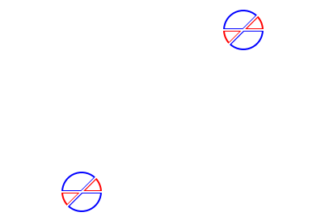

angles
DMS Systems
When measuring angles we don't use decimal places but we use this system to calculate them.
1° (degree) = 60' (minutes)
1' (minute) = 60" (seconds)
1° (degree) = 60' (minutes) = 3600" (seconds)
It is written like this: 45° 12' 36.16"
Sometimes you might need to round it to the nearest degree, minute or second but they round differently. This is because they have a max limit of 60 for the minutes and seconds.
depression & elevation
angle of elevation: when an observer is looking straight and then looks up (that angle is the angle of elevation).
angle of depression: when an observer is looking straight and then looks down (that angle is the angle of depression).
transversal
All the blue angles are equal and all the red angles are equal.
The two horizontal lines are parallel.
bearings
true bearings
this is the defualt type of bearings but we also call it 'true bearings.' The proccess of finding a true bearings is to find the north side and then rotate until you reach the line. Once you reach the line the angle that you went at is the true bearing.